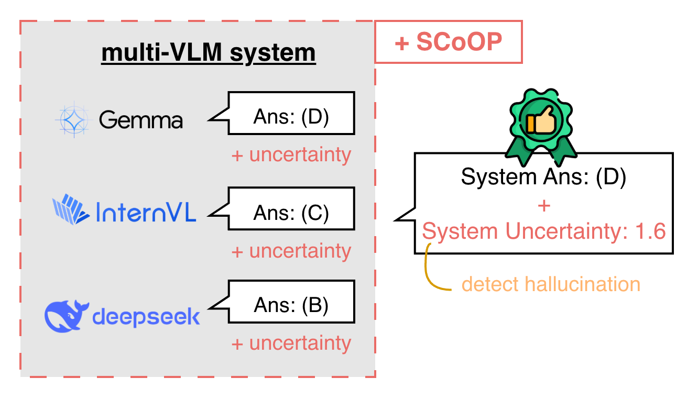

ICLR 2026 Workshop · Poster
SCoOP: uncertainty across a chorus of models.
Semantic Consistent Opinion Pooling is a training-free framework that aggregates heterogeneous vision-language models while measuring collective, system-level uncertainty.

The reliability gap
Combining multiple vision-language models can improve multimodal reasoning, but aggregation also hides disagreement. Standard approaches such as majority voting produce an answer without revealing whether the system reached it through broad agreement or uncertain compromise.
SCoOP treats that disagreement as useful evidence. It maps responses from heterogeneous models into a shared semantic space, estimates confidence for each model, and produces both an aggregated answer and a collective uncertainty score.
How it works
- Query and sample. Multiple VLMs receive the same input and generate several candidate responses.
- Align semantics. Responses are mapped into a consistent option space so different wording does not look like disagreement.
- Weight uncertainty. Each model receives a weight derived from its confidence, using inverse entropy.
- Pool opinions. Weighted opinions form the final answer and a system-level uncertainty score for detection or abstention.
What we found
On ScienceQA, SCoOP improves hallucination detection by roughly 10–13% over the evaluated aggregation baselines and improves abstention performance by 7–9%, while adding only microsecond-level aggregation overhead.
Why it matters
Reliable AI systems should not only produce stronger answers; they should expose when those answers are fragile. SCoOP offers a practical, training-free mechanism for multi-model systems to know when they do not know—without retraining the underlying VLMs or requiring labeled calibration data.